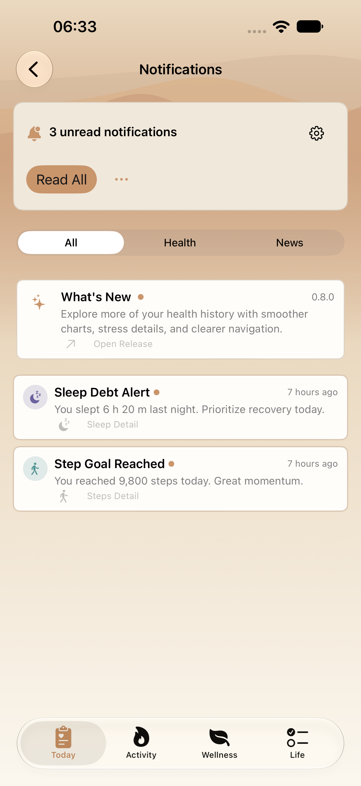
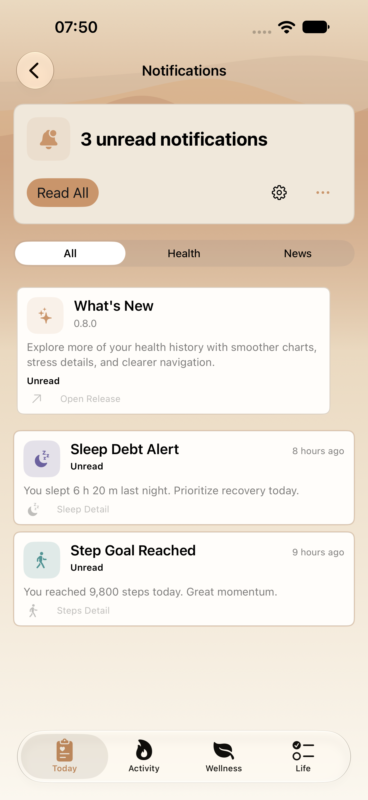
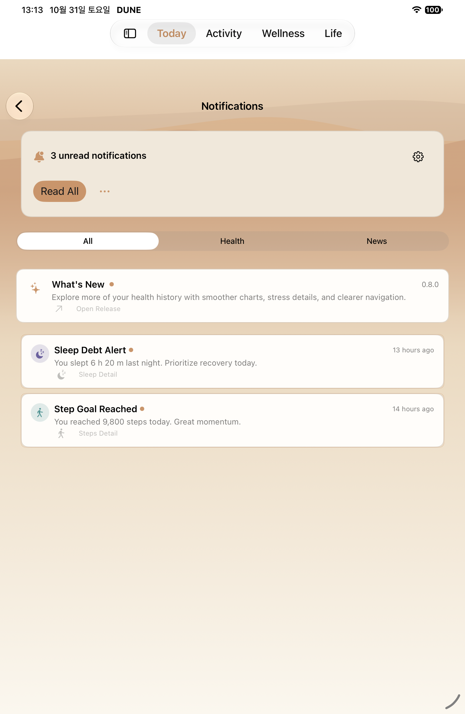
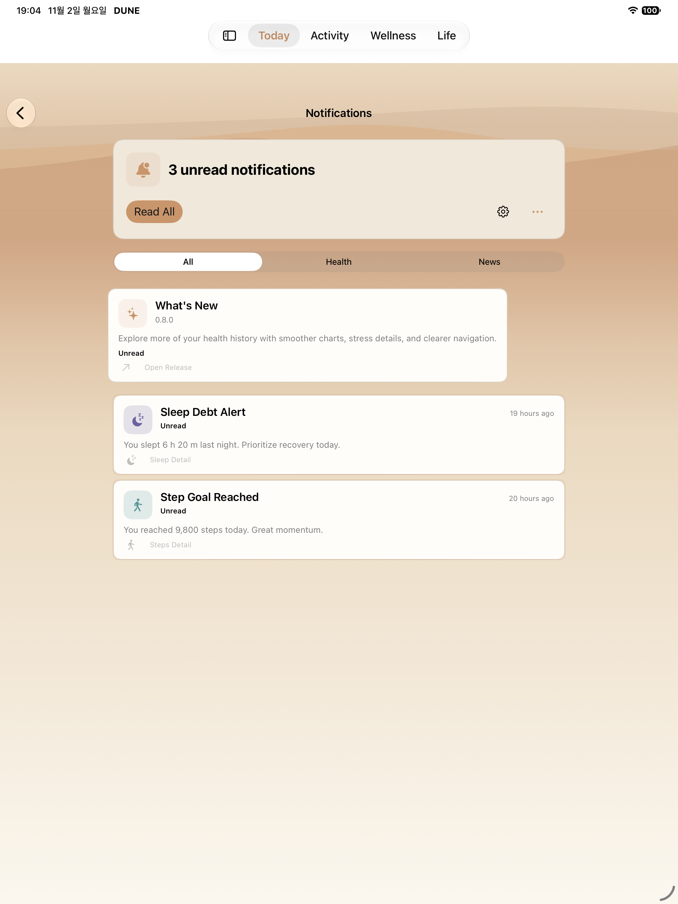
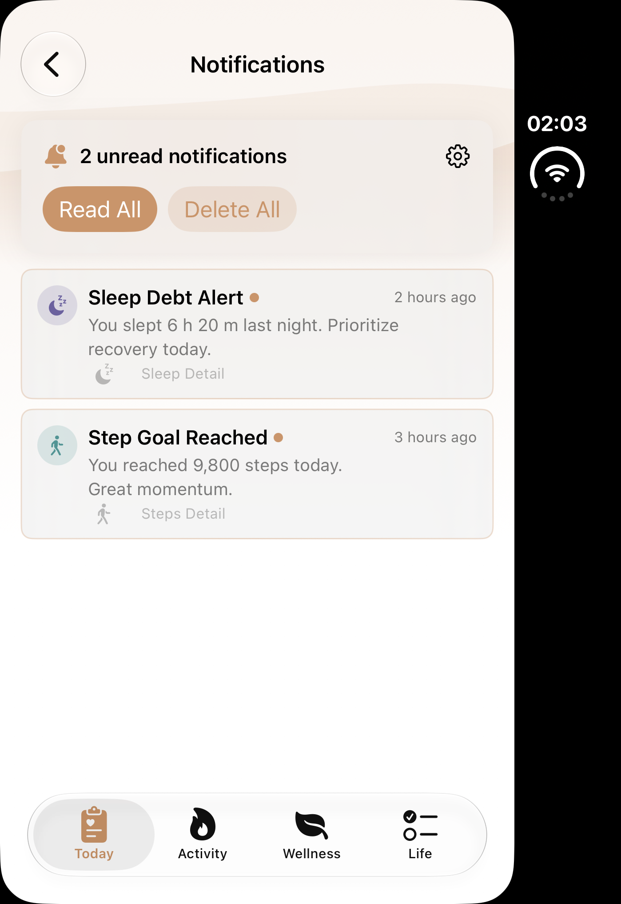
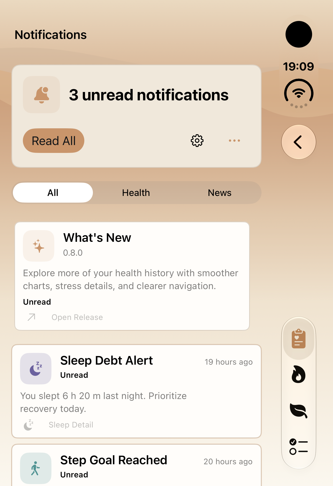
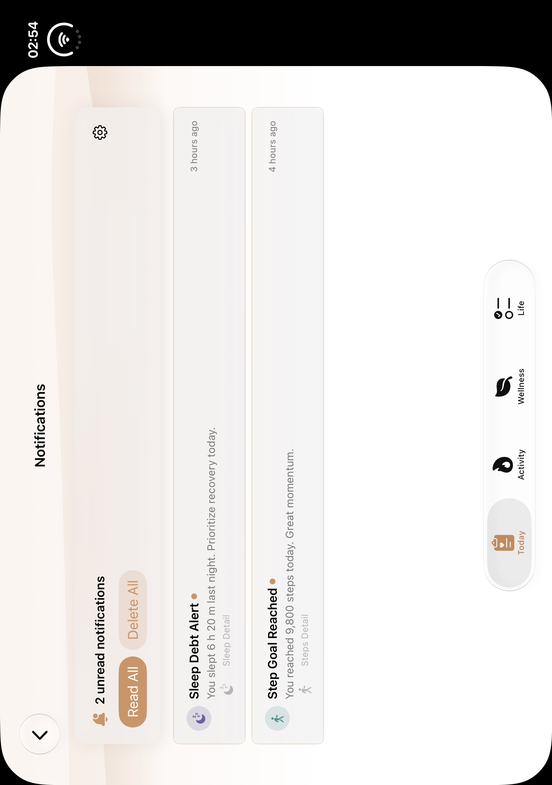
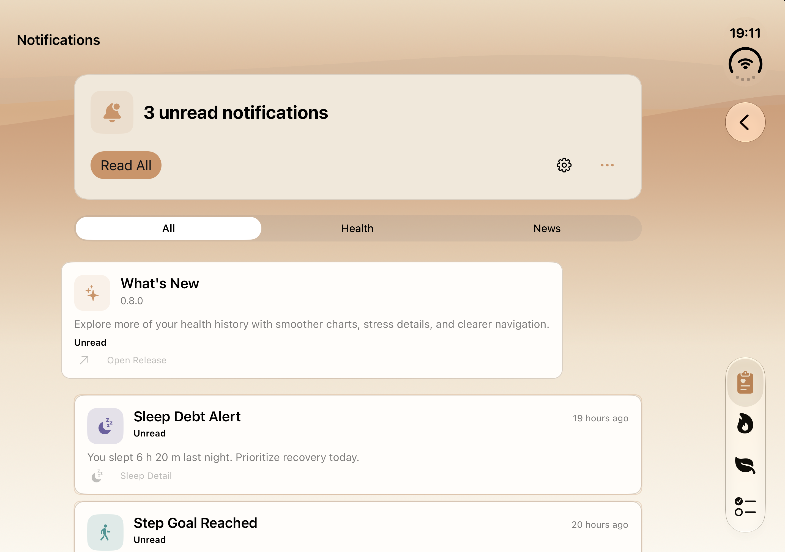

T11 · 알림함
일반 iPhone·iPad·Duo 접힘·펼침의 실제 전후 자료를 정식 맵 T11 네 행에 반영했습니다. Phone 기본은 역사적 7be 자료, MAX와 iPad·Duo는 각 원본에 기록한 실제 실행 자료입니다.
Phone 전후는 동일 기기·영어·전체 필터·읽지 않은 알림3개·버전0.8.0의 원본입니다. iPad 기존은10월31일 mini이며 이후Pro13과 같은 기기 비교로 표시하지 않습니다. 옛Duo는2개건강알림/필터없는 이전버전이고 각도·상태표시가 새자세 검증 증거는 아닙니다.
일반 iPhone
일반 iPhone · 기존 · 10월 31일 동일 기기/All/3unread
583dcaf1 · 2026-10-31T06:33:10.875000+09:00
1320×2868 · SHA256 a950a8c3b0af8dc90607a5d2da30e3f3841e6577e0048010865d79da108f0c66
native-XCTest-attachment
Historical matched normal fixture; preserve actual timestamp/source.일반 iPhone · 개편 기본 · 10월 31일7be 기존 통과 자료 재사용
7be65148 · 2026-10-31T07:50:55.253000+09:00
1320×2868 · SHA256 a066b5d44059014ea0a5192207f366f6b684cf21e13014e44d72934f90813d63
native-XCTest-attachment
Historical October31 native capture; not new November2 or whole currentHEAD evidence. Normal only; no PhoneMAX pass claim. iPad
iPad · 기존 · 10월 31일 T11 알림함 진입
1f7f9900 · 2026-10-31T13:13:06.574000+09:00
1512×2316 · SHA256 8c9497fbc64bff7e5892837e714391a6df2bf23964a87cfe9d0276bbcff09bdc
native-XCTest-attachment
Historical Oct31 iPad mini C8B44B9E; future/currentPro13 may differ in model,UDID,viewport. Not same-device claim. Original dirty unspecified.iPad · 개편 기본 · All / 읽지 않은 알림 3개
ae2598a6 · 2026-11-02T19:04:40.792000+09:00
2064×2752 · SHA256 332802b3eb15440a8c300d74afdb9e81eb02ca065a1265a7d0f91627b2914ad5
native-XCTest-attachment Duo 접힘
Duo 접힘 · 정식 맵 역사 원본
이미지별 소스 미확인 · 2026-10-13T02:03:06.825000+09:00
1398×2034 · SHA256 633e8a7ce01bfbf92496c968a66ab6d29859cb98dcd16675cb2f30f376287431
original canonical capture-index timestamp
Historical canonical original. Old2-health-item fixture,no segmented filter/release row; device/date/version differ from modern fixture. Individual image revision unknown; old global collection provenance separate. Old status/window orientation and numeric hinge angle unverified; not new pose proof.Duo 접힘 · 진입 후 All · 읽지 않음 3개
ae2598a6 · 2026-11-02T19:09:27.254060+09:00
1398×2034 · SHA256 2d29b9698eae5708f3ec6005bc9e9527cad7dec4c1b21307d858f5bd537a162a
host-file-mtime of native paired PNG; not attachment time or checkpoint deadline Duo 펼침
Duo 펼침 · 정식 맵 역사 원본
이미지별 소스 미확인 · 2026-10-13T02:54:22.623000+09:00
2006×2852 · SHA256 4a0254df49157fde861ae91e3cb43109a809e3dc8aed7c31c1a476bbc699c506
original canonical capture-index timestamp
Historical canonical original. Old2-health-item fixture,no segmented filter/release row; device/date/version differ from modern fixture. Individual image revision unknown; old global collection provenance separate. Old status/window orientation and numeric hinge angle unverified; not new pose proof.Duo 펼침 · 진입 후 All · 읽지 않음 3개
ae2598a6 · 2026-11-02T19:11:20.379064+09:00
2853×2007 · SHA256 1eb4bf9425e577f3568cbff3f34683f158d03d6bf1c0c8fa4792470eff321874
host-file-mtime of native paired PNG; not attachment time or checkpoint deadline 일반 iPhone · 최대 접근성 글씨
승인된 추가 1회에서 native ae2598a6의 기존 최대 글씨 검사1건이 통과했습니다. 아래5개 실제 원본은 보충 자료이며 기본 Phone 전후 비교는 동일fixture의10월31일7be 원본을 유지합니다. 승인잔량0이며 이전실패2건을보존합니다.
phone-max-ae2598a6 · 추가 실제 상태
ipad-normal-ae2598a6 · 추가 실제 상태
duo-closed-ae2598a6 · 추가 실제 상태
duo-open-ae2598a6 · 추가 실제 상태